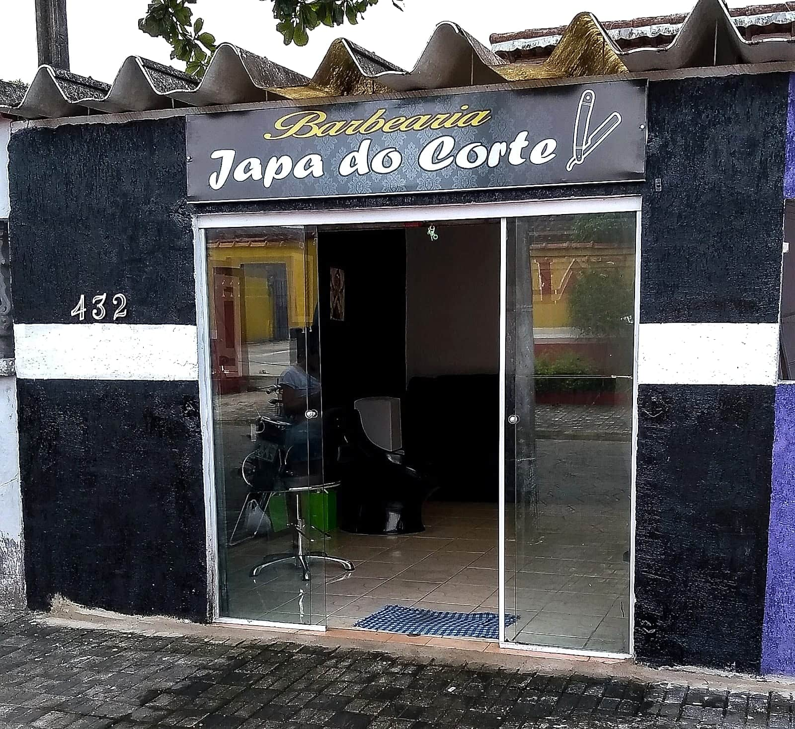

Oi, Japa! Tudo certo? Meu nome é Caio. Passei pela sua barbearia no Google e fiquei impressionado com o trabalho: os desenhos na lateral e o platinado nas fotos estão muito bem feitos.
“Profissional excelente de altíssima qualidade. Local limpo e agradável, de boa localização!!! Recomendo...” — cliente no Google
Com uma nota dessas, tem muita gente procurando barbearia em Mongaguá e caindo na sua ficha. Só que, hoje, quem chega por lá ainda não encontra tudo o que precisa pra decidir:
Não encontramos um site ligado à sua ficha do Google. As informações ficam soltas entre o Maps e páginas de agendamento.
O site junta tudo num lugar só: endereço, horário, serviços, fotos e avaliações, com o nome Japa do Corte em destaque.
O telefone aparece, mas não dá pra saber se é WhatsApp. Muita gente desiste antes de ligar.
No site tem um botão de WhatsApp que já abre a conversa com a mensagem pronta pra marcar o corte.
O horário muda conforme onde a pessoa olha: no Google diz 8h, numa página de agendamento diz 9h.
Fica um horário só, o certo, que você confirma e a gente deixa visível pra todo mundo.
Não aparece uma lista clara do que você faz. Quem procura desenho no cabelo ou platinado não sabe que é aqui.
O site mostra os serviços — corte e degradê, desenhos, platinado, barba e sobrancelha — com fotos da fachada.
Não encontramos um Instagram ou Facebook ligado à sua ficha do Google. Os trabalhos bonitos acabam não aparecendo.
O site tem espaço pras suas redes e pra galeria de cortes, pra pessoa já chegar sabendo o que quer.
Eu já deixei uma versão do site pronta, com as cores pretas e douradas da sua placa. É só dar uma olhada, sem compromisso:
Ver o site do Japa do CorteSe quiser mudar alguma coisa (foto, texto, horário), é rapidinho. E se tiver fotos dos seus cortes, elas ficam ótimas lá.
Um abraço e parabéns pelo trabalho!Caio